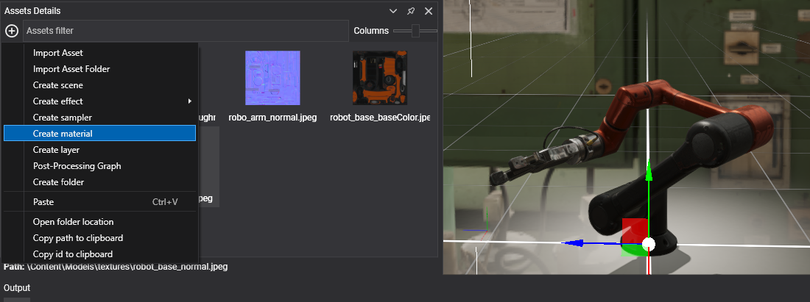
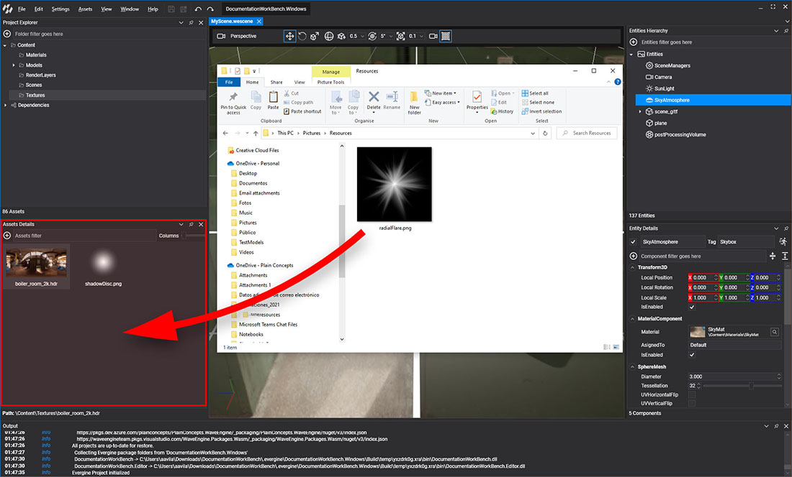
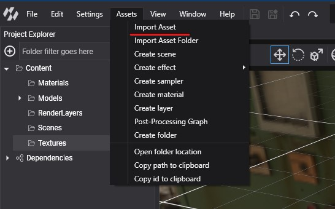
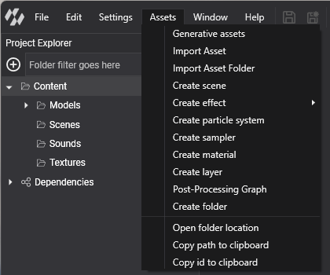
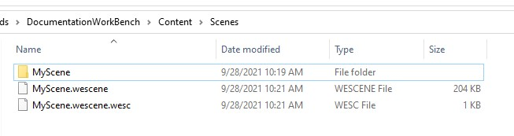

Create Assets

There are two ways to add an asset to a project, depending on its type:
- Import a source file (an image, a 3D model, a sound, a font or any other file). Evergine Studio creates the asset that wraps it.
- Create an Evergine asset, such as a scene, a material or an effect, directly from Evergine Studio.
In both cases the new asset is added to the folder currently selected in the Project Explorer panel.
Import a source file
Drag and drop
Drag one or more files from File Explorer and drop them on the Assets Details panel. Evergine Studio copies each file into the current folder and creates the matching asset.

Import Asset menu
You can also pick the files in a dialog with Import Asset, or copy a whole folder with Import Asset Folder. Both options are available in three places:
- The Assets menu of the main menu bar.
- The
 button of the Assets Details panel.
button of the Assets Details panel. - The context menu that opens when you right-click an empty area of the Assets Details panel.

Asset type by extension
The extension of the file decides which asset is created:
| Asset type | Metafile extension | Source file extensions |
|---|---|---|
| Texture | .wetx |
.jpg, .jpeg, .png, .bmp, .webp, .tga, .dds, .ktx, .ktx2, .hdr |
| Model | .wemd |
.gltf, .glb, .fbx, .obj, .dae, .3ds |
| Sound | .wesn |
.wav, .mp3, .ogg |
| Font | .weft |
.ttf, .otf |
| File | .wefile |
Any other extension |
Note
If the folder already contains a file with the same name, the imported file is renamed with a number suffix. For example, a second texture.jpg becomes texture(1).jpg, and a third one texture(2).jpg.
Create an Evergine asset
Assets that have no external source are created from the same three places: the Assets menu, the button, and the context menu of the Assets Details panel.

| Menu item | Asset | Metafile extension | Files created |
|---|---|---|---|
| Create scene | Scene | .wesc |
MyScene.wescene with the entities, MyScene.wescene.wesc, and a MyScene folder for sub-assets such as the environment probe. |
| Create effect > Graphics Effect | Effect | .wefx |
MyGraphicEffect.wefx and a MyGraphicEffect/Sources folder with Shader.fx. |
| Create effect > Compute Effect | Effect | .wefx |
MyComputeEffect.wefx and its Sources folder. |
| Create effect > Library Effect | Effect | .wefx |
MyLibraryEffect.wefx and its Sources folder. |
| Create particle system | Particle System | .weps |
MyParticleSystem.weps |
| Create sampler | Sampler | .wesp |
MySampler.wesp |
| Create material | Material | .wemt |
MyMaterial.wemt |
| Create layer | Render Layer | .werl |
MyLayer.werl |
| Post-Processing Graph | Post-Processing Graph | .wepp |
MyPostProcessingGraph.wepp |
| Create folder | Folder | .wedir |
A folder and its .wedir metafile. |
Prefabs are created differently: right-click an entity in the Scene Hierarchy panel of the Scene Editor and choose Create prefab. Evergine Studio saves the entity and its children as <name>.weprefab, with the metafile <name>.weprefab.weprf. See Prefabs.
To create a 3D model from a text prompt or a picture, use Generative assets in the same menu. See Generate AI-Driven Assets.
Metafiles
Every asset has a metafile: a YAML file that stores its ID, its properties and one set of settings per profile. The metafile is named after the file it describes, plus the extension of the asset type:
| File on disk | What it is |
|---|---|
Logo.png |
Source file of a texture. |
Logo.png.wetx |
Metafile of that texture. EvergineContent.Textures.Logo_png holds its ID. |
Floor.wemt |
A material. It has no source file, so the metafile is the whole asset. |
This is how a scene looks on disk: the .wescene file with the entities, its .wesc metafile, and the folder with the scene sub-assets.

Effects keep their source in a folder named after the asset:

Important
Keep the source file and its metafile together. If you move or rename assets outside Evergine Studio, move both files, or the asset loses its ID and every reference to it.